论文带读：《PointNet: Deep Learning on Point Sets for 3D Classification and Segmentation》笔者前言Abstract（摘要）1. Introduction（引言）2. Related Work（相关工作）3. Problem Statement（问题陈述）4. Deep Learning on Point Sets（针对点集的深度学习）4.1 Properties of Point Sets in
在过去的十年里，深度学习在多个领域掀起了革命性的浪潮，从图像识别到语音处理，再到自然语言理解，几乎每个领域都在深度学习的引领下迎来了技术突破。然而，当我们将目光投向三维世界时，问题却显得尤为复杂。如何高效、直接地处理三维数据成为一个长期未解的难题。
在这篇论文中，作者提出了一种极具创新性的深度学习架构——PointNet，它能够直接处理点云数据，跳过传统的体素化或投影步骤。这一网络不仅结构简单，还具备令人印象深刻的泛化能力：无论是三维物体分类，还是语义分割，PointNet都能轻松应对，并在多个基准测试上超越了现有方法。阅读这篇论文的时候，笔者总是感觉这个网络的设计“十分自然”，好像本就该如此；但又如此巧妙，一般人难以想到。这篇文章不仅提供了一种处理点云数据的方法，更能够在思想上启发我们。当然，这篇论文也写得较为硬核，一般入门者阅读可能比较吃力。
笔者写这篇文章的初衷非常简单，首先是帮助自己完全理解这篇论文，然后也希望能帮到更多和我一样论文阅读困难的普通学生。本文的写作原则是：不放过任何一句话。很多时候作者假定读者具有和作者类似的知识背景，同时能“领会”一些“显然易得”的东西，这里笔者尽量把所有话解释明白。
本文面向想要理解PointNet原理的读者，尤其是刚走上科研道路的同学。如果您只是想使用它，建议您直接了解PointNet++的架构，而且不必深究原理。当然，笔者后面也会推出PointNet++的论文带读。
如果您想要更好的阅读体验，可以进入这个网页，走之前记得留个点赞和收藏哦~您还可以到相应的GitHub仓库获取原始文件。
本文假设读者对点云和其他常见三维表示的原理、特点、操作有基本的认识，对此不了解的读者可以自行查找相关介绍文章。下面我们就按原文进行逐段的翻译和详解。
Point cloud is an important type of geometric data structure. Due to its irregular format, most researchers transform such data to regular 3D voxel grids or collections of images. This, however, renders data unnecessarily voluminous and causes issues. In this paper, we design a novel type of neural network that directly consumes point clouds, which well respects the permutation invariance of points in the input. Our network, named PointNet, provides a unified architecture for applications ranging from object classification, part segmentation, to scene semantic parsing. Though simple, PointNet is highly efficient and effective. Empirically, it shows strong performance on par or even better than state-of-the-art. Theoretically, we provide analysis towards understanding what the network has learned and why the network is robust with respect to input perturbation and corruption.
翻译：① 点云是一种重要的几何数据结构。② 由于其不规则格式，大多数研究者将这类数据转换为规则的3D体素网格或图像集合。然而，这样的转换往往导致数据冗余，造成了一些问题。③ 在本文中，我们设计了一种新的神经网络，能够直接处理点云，同时很好地尊重输入点的置换不变性。④ 我们的网络名为PointNet，提供了一个统一的架构，适用于从物体分类、部件分割到场景语义解析等多个应用。⑤ 尽管结构简单，PointNet却非常高效且有效。实证结果表明，其性能与最先进的技术相当，甚至更优。从理论上，我们提供了对网络学习内容的分析，解释了该网络为何能对输入扰动和损坏保持鲁棒性。
解释：
(i, j, k)分别访问两个体素网格，那么索引出来的体素一定是相对应的。而点云数据结构没有固定的网格，它可以占用空间中的任意一个连续位置，它也没有顺序，两个点云之间的各个点也没有明确的对应关系，这就是所谓的不规则。如果要用更精确的几个词来描述这个性质的话，可以概括为连续 (continuous)、稀疏 (sparse)、无序 (unordered)。In this paper, we explore deep learning architectures capable of reasoning about 3D geometric data such as point clouds or meshes. Typical convolutional architectures require highly regular input data formats, like those of image grids or 3D voxels, in order to perform weight sharing and other kernel optimizations. Since point clouds or meshes are not in a regular format, most researchers typically transform such data to regular 3D voxel grids or collections of images (e.g., views) before feeding them to a deep net architecture. This data representation transformation, however, renders the resulting data unnecessarily voluminous—while also introducing quantization artifacts that can obscure natural invariances of the data.
翻译：在本文中，我们探讨了能够推理3D几何数据（如点云或网格）的深度学习架构。① 典型的卷积架构需要高度规则的输入数据格式，例如图像网格或3D体素，以便进行权重共享和其他核优化。② 然而，由于点云或网格并不是规则格式，大多数研究者通常会在将其输入深度网络架构之前，将这些数据转换为规则的3D体素网格或图像集合（例如视图）。③ 然而，这种数据表示转换使得结果数据不必要地冗长，同时还引入了量化伪影，这可能会掩盖数据的自然不变性。
解释：
①句已经进行了部分解释，这里再说明下为什么高度规则的输入数据格式才能实现权重共享和其他核优化。权重共享（weight sharing）是指在深度学习中，卷积核的参数（权重）在输入的不同位置重复使用，从而减少参数数量。只有规则的输入（比如图片像素网格或3D体素）才能实现权重共享，因为它们的结构在不同的位置是一致的，是不变的，卷积核在任意位置都能匹配到相同大小、相同排列的局部区域，因此可以使用一个固定的规则对不同位置的信息进行处理。而点云的排列是任意的，不存在一个能同时处理任意位置的通用方法，也就无法实现权重共享。
②句在摘要部分已经进行了说明。这里解释一下③句中的量化伪影（quantization artifacts）。与之类似的一个概念是混叠（aliasing），它在4.2小节出现，因而笔者觉得有必要对这两个概念进行说明：
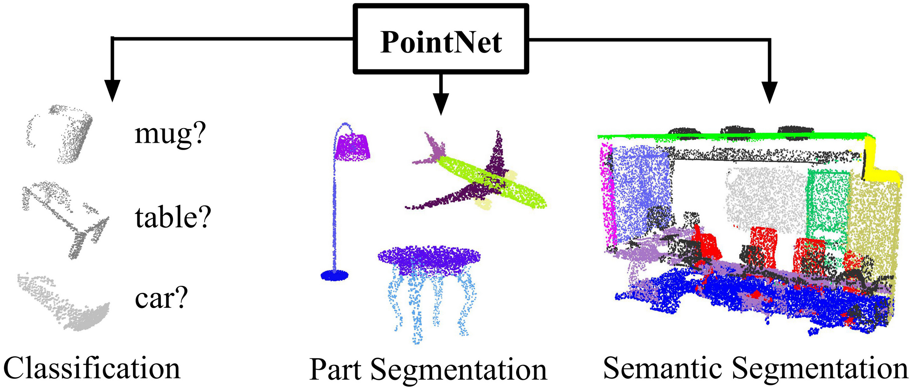
Figure 1. Applications of PointNet. We propose a novel deep net architecture that consumes raw point cloud (set of points) without voxelization or rendering. It is a unified architecture that learns both global and local point features, providing a simple, efficient and effective approach for a number of 3D recognition tasks. 图1. PointNet的应用。我们提出了一种新颖的深度网络架构，它能够直接处理原始点云（点集），无需体素化或渲染。 这是一种统一的架构，能够学习全局和局部点特征，为多种3D识别任务提供了一种简单、高效且有效的方法。
For this reason, we focus on a different input representation for 3D geometry using simply point clouds—and name our resulting deep nets PointNets. Point clouds are simple and unified structures that avoid the combinatorial irregularities and complexities of meshes, and thus are easier to learn from. The PointNet, however, still has to respect the fact that a point cloud is just a set of points and therefore invariant to permutations of its members, necessitating certain symmetrizations in the net computation. Further invariances to rigid motions also need to be considered.
翻译：因此，我们专注于使用点云作为3D几何的不同输入表示，并将我们所得到的深度网络称为PointNets。点云是简单且统一的结构，避免了网格的组合不规则性和复杂性，因此更容易进行学习。然而，PointNet仍然必须考虑到点云仅仅是一组点，因此对其成员的排列是不变的，这就需要在网络计算中进行某些对称化。此外，还需要考虑对刚体运动的不变性。
解释：
Our PointNet is a unified architecture that directly takes point clouds as input and outputs either class labels for the entire input or per point segment/part labels for each point of the input. The basic architecture of our network is surprisingly simple, as in the initial stages, each point is processed identically and independently. In the basic setting, each point is represented by just its three coordinates
. Additional dimensions may be added by computing normals and other local or global features.
翻译：我们的PointNet是一个统一的架构，能够直接将点云作为输入，并输出整个输入的类别标签或每个点的分段/部分标签。我们的网络基本架构出奇简单，因为在初始阶段，每个点都是独立且相同地处理。在基本设置中，每个点仅由其三个坐标
解释：
(N, 3)。在Open3D库中，对一个点云对象获取其points属性，打印pcd.points.shape，输出正是(N, 3)，其中N是点的数量。Key to our approach is the use of a single symmetric function, max pooling. Effectively, the network learns a set of optimization functions/criteria that select interesting or informative points of the point cloud and encode the reason for their selection. The final fully connected layers of the network aggregate these learned optimal values into the global descriptor for the entire shape as mentioned above (shape classification) or are used to predict per point labels (shape segmentation).
翻译：① 我们方法的关键是使用一个单一的对称函数——最大池化。② 实际上，网络学习了一组优化函数/标准，用于选择点云中有趣或信息丰富的点，并编码其选择的原因。③ 网络的最终全连接层将这些学习到的最优值汇总为整个形状的全局描述符，如前所述（形状分类），或者用于预测每个点的标签（形状分割）。
解释：
前面我们提到PointNet使用了对顺序不敏感的函数对特征进行聚合，①句则介绍了这个函数的名称——最大池化（Max Pooling）。在PointNet中，该函数对每个特征维度求最大值，找出在这个特征下特征最显著的点，并使用这个点在该维度上的值作为全局特征在该维度上的值。
“使用每个特征维度中最显著的点的值来描述整体特征”是一种通用且有效的思路。其核心思想是：通过最大池化操作，保留每个特征维度中最重要或最突出的信息（即最大值），这些值往往来自关键点，能够反映点云的核心几何结构和语义特征。相比于平均池化，最大池化更关注显著特征，不会被不相关的点（如噪声点或背景点）稀释掉。
②句提到“选择点云中有趣或信息丰富的点”，指的就是通过最大池化找到每个特征维度下该特征最显著的点，并获取其特征值。而“网络学习的一组优化函数/标准”指的是局部特征提取的过程，它对单个点的各个特征显著程度进行打分，让最大池化能够判断哪些点的特征最有价值。这个打分的操作就是原文所说的“编码其选择的原因”。
③句在上一部分已经提过，指的是特征向量转换到输出结果的过程。
Our input format is easy to apply rigid or affine transformations to, as each point transforms independently. Thus, we can add a data-dependent spatial transformer network that attempts to canonicalize the data before the PointNet processes them, so as to further improve the results.
翻译：① 我们的输入格式便于对每个点独立应用刚性或仿射变换。② 因此，我们可以添加一个数据依赖的空间变换网络，在PointNet处理数据之前尝试对数据进行规范化，以进一步提高结果。
解释：
①句说明了使用点云的一个优势。由于点云的各个点是独立、无序的，因此只需要对每个点进行相应的变换，就可以使整体进行变换，非常简便。
这里读者可能有一个疑问，对每个单元进行相同的变换，不就能实现整体的变换了吗？为什么只说点云能够对每个点独立应用变换呢？事实上，基于规则采样的数据格式，如2D图像、体素网格的确都是无法做到这一点的。我们可以用2D图像举例：
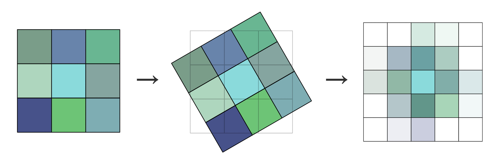
可以看到，原来的2D图像在每个单元（即像素）进行单独变换后，新的单元不再适配原有的网格了。因此，我们就必须通过线性插值等手段（上图使用双线性插值）重新确定每个网格的值，结果如上图中最右边的图像。类似地，体素网格在变换后也需要重新进行规则化，实现较为复杂。相比之下，点云在每个点单独变换后不需要任何后处理，因而最为简便，而且也不会产生任何信息丢失和偏差。
②句提到了一个新的网络空间变换网络T-Net（Spatial Transformer Network），它可以看做是PointNet的外挂组件，分别在输入点云前、提取局部特征后计算一个变换矩阵，将它们对齐到一个标准化的几何空间。这部分详细内容见后文。原文中“数据依赖”是指变换是根据输入数据内容动态学习得到的，而不是一个固定的或预设的变换矩阵。具体来说，T-Net 会根据输入点云或点的特征，利用神经网络自动计算出一个最优的变换矩阵。
We provide both a theoretical analysis and an experimental evaluation of our approach. We show that our network can approximate any set function that is continuous. More interestingly, it turns out that our network learns to summarize an input point cloud by a sparse set of key points, which roughly corresponds to the skeleton of objects according to visualization. The theoretical analysis provides an understanding of why our PointNet is highly robust to small perturbations of input points as well as to corruption through point insertion (outliers) or deletion (missing data).
翻译：我们提供了对我们方法的理论分析和实验评估。① 我们展示了我们的网络能够逼近任何连续的集合函数。② 更有趣的是，结果表明，网络通过一组稀疏的关键点来总结输入的点云，这些关键点大致对应于物体的骨架，从可视化的角度来看。理论分析帮助我们理解了为什么PointNet对输入点的小扰动以及通过点插入（离群点）或删除（缺失数据）造成的损坏具有很高的鲁棒性。
解释：
On a number of benchmark datasets ranging from shape classification, part segmentation to scene segmentation, we experimentally compare our PointNet with state-of-the-art approaches based upon multi-view and volumetric representations. Under a unified architecture, not only is our PointNet much faster in speed, but it also exhibits strong performance on par or even better than state of the art.
翻译：在多个基准数据集上，包括形状分类、部件分割和场景分割，我们对我们的PointNet与基于多视图和体素表示的最先进方法进行了实验比较。在统一架构下，我们的PointNet不仅速度更快，而且在性能上与最先进的方法相当，甚至更优。
The key contributions of our work are as follows:
- We design a novel deep net architecture suitable for consuming unordered point sets in 3D;
- We show how such a net can be trained to perform 3D shape classification, shape part segmentation, and scene semantic parsing tasks;
- We provide thorough empirical and theoretical analysis on the stability and efficiency of our method;
- We illustrate the 3D features computed by the selected neurons in the net and develop intuitive explanations for its performance.
The problem of processing unordered sets by neural nets is a very general and fundamental problem – we expect that our ideas can be transferred to other domains as well.
翻译：
我们工作的关键贡献如下：
处理无序集合的神经网络问题是一个非常普遍和基础的问题——我们期望我们的想法能够转移到其他领域。
解释：
Point Cloud Features: Most existing features for point clouds are handcrafted towards specific tasks. Point features often encode certain statistical properties of points and are designed to be invariant to certain transformations, which are typically classified as intrinsic [2, 24, 3] or extrinsic [20, 19, 14, 10, 5]. They can also be categorized as local features and global features. For a specific task, it is not trivial to find the optimal feature combination.
翻译：
点云特征：① 大多数现有的点云特征是人工设计的，针对特定任务进行优化。点云特征通常编码了点的某些统计属性，并且设计时考虑了对某些变换的不变性，②这些特征通常被分为内在特征（intrinsic）[2, 24, 3]和外在特征（extrinsic）[20, 19, 14, 10, 5]。③ 它们还可以分为局部特征（Local features）和全局特征（Global features）。对于一个特定任务，找到最佳的特征组合并非易事。
解释：
Deep Learning on 3D Data： 3D data has multiple popular representations, leading to various approaches for learning.
- Volumetric CNNs: [28, 17, 18] are the pioneers applying 3D convolutional neural networks on voxelized shapes. However, volumetric representation is constrained by its resolution due to data sparsity and computation cost of 3D convolution. FPNN [13] and Vote3D [26] proposed special methods to deal with the sparsity problem; however, their operations are still on sparse volumes, and it's challenging for them to process very large point clouds
- Multiview CNNs: [23, 18] have tried to render 3D point clouds or shapes into 2D images and then apply 2D conv nets to classify them. With well-engineered image CNNs, this line of methods has achieved dominating performance on shape classification and retrieval tasks [21]. However, it's nontrivial to extend them to scene understanding or other 3D tasks such as point classification and shape completion
- Spectral CNNs: Some latest works [4, 16] use spectral CNNs on meshes. However, these methods are currently constrained on manifold meshes such as organic objects, and it's not obvious how to extend them to non-isometric shapes such as furniture
- Feature-based DNNs: [6, 8] firstly convert the 3D data into a vector, by extracting traditional shape features and then use a fully connected net to classify the shape. We think they are constrained by the representation power of the features extracted.
翻译：
3D数据的深度学习：3D 数据有多种流行的表示方式，因此出现了不同的学习方法。
解释：
Deep Learning on Unordered Sets: From a data structure point of view, a point cloud is an unordered set of vectors. While most works in deep learning focus on regular input representations like sequences (in speech and language processing), images, and volumes (video or 3D data), not much work has been done in deep learning on point sets.
One recent work from Oriol Vinyals et al. [25] looks into this problem. They use a read-process-write network with an attention mechanism to consume unordered input sets and show that their network has the ability to sort numbers. However, since their work focuses on generic sets and NLP applications, it lacks the consideration of geometry in the sets.
翻译：
针对无序集合的深度学习：从数据结构的角度来看，点云是一个无序的向量集合。尽管深度学习的许多研究集中在序列（如语音和语言处理）、图像以及体积（如视频或三维数据）等规则输入表示上，但在点集的深度学习研究方面尚未有太多工作。
Oriol Vinyals 等人最近的一项研究 [25] 探讨了这个问题。他们使用了带有注意力机制的读-处理-写网络来处理无序输入集合，并展示了该网络具有对数字进行排序的能力。然而，由于他们的工作主要集中在通用集合和自然语言处理应用上，因此对集合中的几何特性考虑不足。
解释：
We design a deep learning framework that directly consumes unordered point sets as inputs. A point cloud is represented as a set of 3D points
, where each point is a vector of its coordinate plus extra feature channels such as color, normal, etc. For simplicity and clarity, unless otherwise noted, we only use the coordinate as our point's channels.
翻译：
我们设计了一个深度学习框架，能够直接处理无序的点集作为输入。点云表示为一组3D点
For the object classification task, the input point cloud is either directly sampled from a shape or pre-segmented from a scene point cloud. Our proposed deep network outputs
scores for all the candidate classes. For semantic segmentation, the input can be a single object for part region segmentation, or a sub-volume from a 3D scene for object region segmentation. Our model will output scores for each of the points and each of the semantic sub-categories.
翻译：
对于物体分类任务，输入的点云可以直接从形状中采样，也可以从场景点云中预先分割而来。我们提出的深度网络为所有
解释：
The architecture of our network (Sec 4.2) is inspired by the properties of point sets in
(Sec 4.1).
翻译：我们网络的架构（第4.2节）受到
Our input is a subset of points from an Euclidean space. It has three main properties:
- Unordered. Unlike pixel arrays in images or voxel arrays in volumetric grids, point cloud is a set of points without specific order. In other words, a network that consumes
3D point sets needs to be invariant to permutations of the input set in data feeding order. - Interaction among points. The points are from a space with a distance metric. It means that points are not isolated, and neighboring points form a meaningful subset. Therefore, the model needs to be able to capture local structures from nearby points, and the combinatorial interactions among local structures.
- Invariance under transformations. As a geometric object, the learned representation of the point set should be invariant to certain transformations. For example, rotating and translating points all together should not modify the global point cloud category nor the segmentation of the points.
翻译：
我们的输入是欧几里得空间中若干点构成的子集。它具有三个主要特性：
解释：
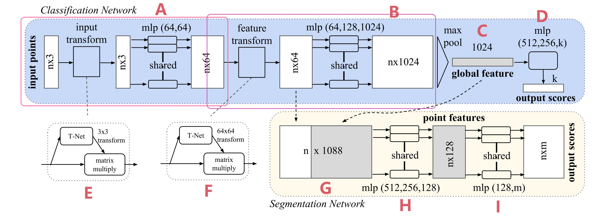
Figure 2. PointNet Architecture. The classification network takes n points as input, applies input and feature transformations, and then aggregates point features by max pooling. The output is classification scores for k classes. The segmentation network is an extension to the classification net. It concatenates global and local features and outputs per point scores. “mlp” stands for multi-layer perceptron, numbers in bracket are layer sizes. Batchnorm is used for all layers with ReLU. Dropout layers are used for the last mlp in classification net.
图2. PointNet架构。分类网络以n个点作为输入，应用输入和特征变换，然后通过最大池化聚合点特征。输出是k个类别的分类得分。分割网络是分类网络的扩展。它连接全局和局部特征，并输出每个点的得分。“mlp”代表多层感知器，括号中的数字是层的大小。所有层都使用批归一化和ReLU激活函数。分类网络最后的mlp使用了Dropout层。
Our full network architecture is visualized in Fig 2, where the classification network and the segmentation network share a great portion of structures. Please read the caption of Fig 2 for the pipeline.
Our network has three key modules: the max pooling layer as a symmetric function to aggregate information from all the points, a local and global information combination structure, and two joint alignment networks that align both input points and point features.
We will discuss our reason behind these design choices in separate paragraphs below.
翻译：
我们的完整网络架构在图2中进行了可视化，其中分类网络和分割网络共享了很大一部分结构。请参阅图2的说明以了解整个流程。
我们的网络有三个关键模块：作为对称函数的最大池化层，用于从所有点聚合信息；局部和全局信息组合结构；以及两个联合对齐网络，用于对齐输入点和点特征。
我们将在下面的段落中分别讨论这些设计选择背后的原因。
解释：
正如论文在前文中说的，这个网络的结构“surprisingly simple”，没有用到任何复杂的组件。如果您通过前文已经了解了各个主要步骤的原理，相信这个架构图也不难理解。这里我们对整个网络的流程进行梳理。笔者一般习惯于通过追踪信息流动的方式梳理流程，即通过每一步的输入、输出及其格式将各个部分串联起来。
A部分可以看做是一个整体。
B部分也可以看作是一个整体，它的结构和A几乎一样，只是输入变成了
C部分是Max Pooling操作。这一步在前文已经讲解过了。它输出
其他部分则是具体任务的应用了。D部分是针对分类任务的，它将维度为
G、H、I对应的是语义分割任务。G处首先将维度为
说明：到这里我们就已经对PointNet的整体架构和基本原理有了一个基本的、全面的认识，如果您只是想在自己的项目中应用PointNet，希望对其架构、原理进行基本的了解，那么到这里就已经足够了，您可以直接跳到实验或结论部分。但如果您对PointNet的原理感兴趣，或者希望基于PointNet进行学术研究，笔者建议您阅读完剩余的部分，这部分包含理论分析和大量数学计算，建议读者静心阅读、反复思考。
Symmetry Function for Unordered Input
In order to make a model invariant to input permutation, three strategies exist:
- Sort input into a canonical order.
- Treat the input as a sequence to train an RNN, but augment the training data by all kinds of permutations.
- Use a simple symmetric function to aggregate the information from each point.
Here, a symmetric function takes
vectors as input and outputs a new vector that is invariant to the input order. For example, and operators are symmetric binary functions.
翻译：
为了使模型对输入的排列不变性（permutation invariant）具有鲁棒性，通常有以下三种策略：
这里，对称函数接受
解释：
定义：
设
则称
While sorting sounds like a simple solution, in high-dimensional space there does not exist an ordering that is stable with respect to point perturbations in the general sense. This can be easily shown by contradiction. If such an ordering strategy exists, it defines a bijection map between a high-dimensional space and a
real line. It is not hard to see that requiring an ordering to be stable with respect to point perturbations is equivalent to requiring that this map preserves spatial proximity as the dimension reduces, a task that cannot be achieved in the general case. Therefore, sorting does not fully resolve the ordering issue, and it's hard for a network to learn a consistent mapping from input to output as the ordering issue persists. As shown in experiments (Fig 5), we find that applying a MLP directly on the sorted point set performs poorly, though slightly better than directly processing an unsorted input.
翻译：
① 尽管排序看起来是一个简单的解决方案，但在高维空间中，并不存在一种对点扰动（point perturbations）稳定的排序方法。② 这可以通过反证法轻松证明。如果这样一种排序策略存在，它将定义一个高维空间与
解释：
这一段解释了为什么难以找到一种稳定的算法对点云进行排序。这里首先说明什么是“对点扰动稳定”。排序的“稳定性”是指如果点云中的点发生了轻微扰动（例如由于噪声或测量误差），排序的结果也应该只发生轻微变化，而不是完全乱掉，这是我们对一个排序算法最基本的期待。
②③④句作者用几句话论述了为什么这样一个排序算法是无法找到的，但作者说得比较模糊。下面笔者尝试用更加精确的语言进行分析。由于笔者水平原因，下面的数学论述可能有错误，而且并没有直接证明该结论，但笔者希望提供一个分析的思路供读者理解。
首先，我们说明“定义一个高维空间与
这里我们首先思考这样一个问题：我们大一就学习了各种排序算法，但如何统一描述这些算法呢？这里我指的是所有种类的排序算法，与其实现原理无关。如果使用输入输出来描述排序算法的话，排序算法可以抽象为：输入一个
作者所说的“高维空间”指的就是
而排序算法的输出
前面提到，特定的元素总是对应一个确定的输出，不管输入的顺序如何。不管输入是
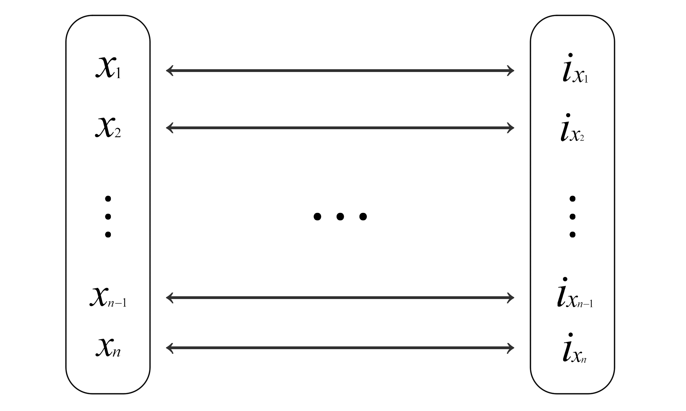
其中，
接下来，我将用自己的思路分析③④的结论。
首先，我们给点集做一个定义。设一个高维空间中的点集用矩阵
从高维空间映射到低维空间也叫投影（projection）。这里我们假设投影是线性的，从高维空间
其中
上面我们对问题进行了更加严谨、清晰地定义。不过由于笔者水平原因，无法继续给出严谨的证明，当然论文作者也没有。不过为了方便读者理解、感受为什么找到这样一个排序算法是困难的，我们可以继续做如下思考：
The idea to use RNN considers the point set as a sequential signal and hopes that by training the RNN with randomly permuted sequences, the RNN will become invariant to input order. However, in "OrderMatters" [25], the authors have shown that order does matter and cannot be totally omitted. While RNNs have relatively good robustness to input ordering for sequences with small lengths (dozens), it's hard to scale to thousands of input elements, which is the common size for point sets. Empirically, we have also shown that models based on RNN do not perform as well as our proposed method (Fig 5).
翻译：
使用 RNN 的方法将点集视为一个序列信号，希望通过用随机排列的序列训练 RNN，使 RNN 对输入顺序具有不变性。然而，在 "OrderMatters" [25] 一文中，作者表明顺序确实重要，且无法完全忽略。尽管 RNN 对于小长度序列（几十个点）的输入顺序具有较好的鲁棒性，但很难扩展到数千个输入元素，这在点集处理中相当常见。从经验上看，我们也表明基于 RNN 的模型性能不如我们提出的方法（图 5）。
解释：
Our idea is to approximate a general function defined on a point set by applying a symmetric function on transformed elements in the set:
where
, , and is a symmetric function. Empirically, our basic module is very simple: we approximate
by a multi-layer perceptron network and by a composition of a single variable function and a max pooling function. This is found to work well by experiments. Through a collection of , we can learn a number of 's to capture different properties of the set.
翻译：
我们的想法是，通过对点集中每个元素的变换应用对称函数，来近似一个定义在点集上的广义函数：
其中
从经验上看，我们的基本模块非常简单：我们用一个多层感知机（MLP）网络来近似
解释：
While our key module seems simple, it has interesting properties (see Sec 5.3) and can achieve strong performance (see Sec 5.1) in a few different applications. Due to the simplicity of our module, we are also able to provide theoretical analysis as in Sec 4.3.
翻译：
虽然我们的关键模块看起来简单，但它具有一些有趣的特性（见 5.3 节），并且在几种不同的应用中表现出色（见 5.1 节）。由于模块简单，我们还能够提供理论分析（见 4.3 节）。
Local and Global Information Aggregation
The output from the above section forms a vector
, which is a global signature of the input set. We can easily train a SVM or multi-layer perceptron classifier on the shape global features for classification. However, point segmentation requires a combination of local and global knowledge. We can achieve this in a simple yet highly effective manner.
翻译：
上述部分的输出形成一个向量
Our solution can be seen in Figure 2 (Segmentation Network). After computing the global point cloud feature vector, we feed it back to per-point features by concatenating the global feature with each of the point features. Then we extract new per-point features based on the combined point features—this time the per-point feature is aware of both the local and global information.
翻译：
我们的解决方案可以在图2（分割网络）中看到。在计算全局点云特征向量后，我们通过将全局特征与每个点特征连接，将其反馈到每个点特征中。然后，我们基于组合后的点特征提取新的每点特征——这次每点特征能够意识到局部和全局信息。
With this modification, our network is able to predict per-point quantities that rely on both local geometry and global semantics. For example, we can accurately predict per-point normals (see figure in supplementary materials), validating that the network is able to summarize information from the point's local neighborhood. In the experimental section, we also show that our model can achieve state-of-the-art performance on shape part segmentation and scene segmentation.
翻译：
通过这一修改，我们的网络能够预测依赖于局部几何和全局语义的每点量。例如，我们可以准确预测每点法线（参见补充材料中的图），验证网络能够总结点的局部邻域信息。在实验部分，我们还展示了我们的模型在形状部件分割和场景分割方面能够实现最先进的性能。
解释：
Joint Alignment Network
The semantic labeling of a point cloud must be invariant under certain geometric transformations, such as rigid transformations. Therefore, we expect that the learned representation by our point set is invariant to these transformations.
A natural solution is to align all input sets to a canonical space before feature extraction. Jaderberg et al. [9] introduced the idea of a spatial transformer to align 2D images through sampling and interpolation, achieved by a specifically tailored layer implemented on GPU.
翻译：
点云的语义标注必须在某些几何变换（例如刚体变换）下保持不变。因此，我们期望点集学习到的表示对这些变换具有不变性。
一个自然的解决方案是在特征提取之前将所有输入点集对齐到一个规范空间。Jaderberg 等人 [9] 提出了空间变换器（spatial transformer）的概念，通过采样和插值实现对二维图像的对齐，这一过程通过专门设计的 GPU 层实现。
解释：
笔者在Abstract部分已经对不变性有了初步的介绍，相信读者可以理解为什么作者会希望PointNet具有不变性的特征。笔者认为，实现不变性可能有以下的途径（不保证正确，参考了这篇博文）:
原文提到了 [9] 的工作，该工作是针对二维图像的。它首先会给出变换的参数（如平移、旋转、缩放等），然后会在一个采样网格中对变换后的数据进行规范化，即原文所说的“采样和插值”。这个网络是可微的，能够作为组件挂载到现有网络中一并训练并使用。
Our input form of point clouds allows us to achieve this goal in a much simpler way compared with [9]. We do not need to invent any new layers, and no aliasing is introduced as in the image case. We predict an affine transformation matrix by a mini-network (T-net in Fig 2) and directly apply this transformation to the coordinates of the input points. The mini-network itself resembles the larger network and is composed of basic modules for point-independent feature extraction, max pooling, and fully connected layers. More details about the T-net are in the supplementary.
翻译：
① 相比 [9]，我们的点云输入形式使得实现这一目标更加简单。② 我们不需要设计新的层结构，③ 也不会像图像处理那样引入混叠现象。④ 我们通过一个小型网络（如图 2 中的 T-net）预测一个仿射变换矩阵，直接将此变换应用于输入点的坐标。⑤ 小型网络本身的结构类似于主网络，由用于点独立特征提取的基础模块、最大池化层以及全连接层组成。关于 T-net 的更多细节，请参见补充材料。
解释：
This idea can be further extended to the alignment of feature space as well. We can insert another alignment network on point features and predict a feature transformation matrix to align features from different input point clouds. However, the transformation matrix in the feature space has a much higher dimension than the spatial transform matrix, which greatly increases the difficulty of optimization. Therefore, we add a regularization term to our softmax training loss, constraining the feature transformation matrix to be close to an orthogonal matrix:
where
is the feature alignment matrix predicted by a mini-network. An orthogonal transformation will not lose information in the input, which is desirable. We find that by adding the regularization term, the optimization becomes more stable, and our model achieves better performance.
翻译：
这一思想还可以进一步扩展到特征空间的对齐中。我们可以在点特征上插入另一个对齐网络，并预测一个特征变换矩阵，从而对齐来自不同输入点云的特征。然而，特征空间中的变换矩阵维度远高于空间变换矩阵，这极大地增加了优化的难度。因此，我们在 softmax 训练损失中加入一个正则化项，将特征变换矩阵约束为接近正交矩阵：
其中
解释：
这一段是说，T-Net不仅可以用于三维空间的对齐，可以用于特征空间的对齐。同时，这段话又提到了损失函数相关的内容。大部分论文并非自顶向下进行介绍，而是按创新点分散介绍，因而造成了一些理解的障碍。这里我们进行一些梳理。
先说明为什么希望T-Net输出一个正交矩阵。正交矩阵一个基本的特性是，变换后向量的长度不变、夹角不变。正交矩阵不会引入特征的缩放、扭曲或信息丢失。希望
然后说明这个公式是怎么回事。
最后再整体介绍下PointNet使用的Loss函数：
Loss可以分为两部分，第一部分是相应任务的损失，例如分类、语义分割等。第二部分就是刚才计算的正则项了，它会乘以一个系数加入到整体的Loss函数中。这里只有一个正则项，是因为根据原文“特征空间中的变换矩阵维度远高于空间变换矩阵”，PointNet仅计算了对特征空间变换的矩阵的Loss，第一个T-Net不产生Loss。
我们可以结合源代码理解：
x1def get_loss(pred, label, end_points, reg_weight=0.001):2 """ pred: B*NUM_CLASSES,3 label: B, """4 loss = tf.nn.sparse_softmax_cross_entropy_with_logits(logits=pred, labels=label)5 classify_loss = tf.reduce_mean(loss)6 tf.summary.scalar('classify loss', classify_loss)7
8 # Enforce the transformation as orthogonal matrix9 transform = end_points['transform'] # B x K x K10 K = transform.get_shape()[1].value11 mat_diff = tf.matmul(transform, tf.transpose(transform, perm=[0,2,1]))12 mat_diff -= tf.constant(np.eye(K), dtype=tf.float32)13 mat_diff_loss = tf.nn.l2_loss(mat_diff) 14 tf.summary.scalar('mat loss', mat_diff_loss)15
16 return classify_loss + mat_diff_loss * reg_weightUniversal Approximation
We first show the universal approximation ability of our neural network to continuous set functions. By the continuity of set functions, intuitively, a small perturbation to the input point set should not greatly change the function values, such as classification or segmentation scores.
Formally, let
, and let be a continuous set function on with respect to the Hausdorff distance , i.e., , for any , if , then . Our theorem states that can be arbitrarily approximated by our network given enough neurons at the max pooling layer, i.e., in Equation (1) is sufficiently large.
翻译：
我们首先展示了神经网络对连续集合函数的通用近似能力。由于集合函数的连续性，① 直观上，对输入点集进行微小扰动不应显著改变函数值，例如分类或分割得分。
形式化地，② 令
解释：
到这里我们迎来了论文最难懂的部分之一（不含附录）。在这一部分，作者对PointNet的性质进行了数学上的分析，给出了数学语言的描述。作者还对定理进行了证明，这部分见论文附录部分。
关于通用近似定理，读者可以参考维基百科的介绍。一句话概括就是：神经网络可以用来近似任意的复杂函数，并且可以达到任意近似精准度。这里作者说明了PointNet的通用近似能力。之所以需要近似一个连续函数，①句进行了说明。为保证函数的鲁棒性，我们需要这个性质。设想一下，如果输入仅发生微小变化，但输出却可能产生跳变，或直接趋于无穷，函数是不可能稳定的。
接下来我们拆解这个形式化定义。
首先是
③句有些绕，它其实是定义了点集比较的方法。就好比想要比较实数集上的两个数，我们可以用
④句读者应该非常熟悉，这就是经典的
⑤句留到定理2再做说明。
Theorem 1
Supposeis a continuous set function with respect to the Hausdorff distance . For any , there exists a continuous function and a symmetric function , such that for any , where
is the full list of elements in ordered arbitrarily, is a continuous function, and is a vector max operator that takes vectors as input and returns a new vector of the element-wise maximum.
翻译：
定理 1
假设
其中
解释：
我们分两步进行理解。首先，这个定理定义了一个函数
定理一的目的在于找到这样一个函数
这个定理就是要在理论上证明PointNet设计的合理性。具体证明过程在附录部分。
The proof of this theorem can be found in our supplementary material. The key idea is that in the worst case, the network can learn to convert a point cloud into a volumetric representation by partitioning the space into equal-sized voxels. In practice, however, the network learns a much smarter strategy to probe the space, as discussed further in the visualizations of point functions.
翻译：
定理的证明见附加材料。关键思想是，在最坏情况下，网络可以通过将空间划分为大小相等的体素（voxels）来学习将点云转换为体积表示。然而在实际中，网络会学习一种更加智能的策略来探索空间，具体内容可以参考点函数的可视化分析部分。
解释：
这里作者提供了一个直观的思路，说明为什么这样一个函数一定存在，但作者只是一带而过，看样子作者认为这是“显然易得的”😭。这里我们展开来说：
以上就是作者所说的“最差情况”，可以看到，理论上这种网络也能完成任务。当然，PointNet实际的原理更加高级、灵活，我们前面已经介绍过。
Bottleneck Dimension and Stability
Theoretically and experimentally, we find that the expressiveness of our network is strongly affected by the dimension of the max pooling layer, i.e.,
in Equation (1). Here we provide an analysis, which also reveals properties related to the stability of our model. We define
to be the sub-network of which maps a point set in to a -dimensional vector. The following theorem tells us that small corruptions or extra noise points in the input set are not likely to change the output of our network:
翻译：
理论和实验表明，网络的表达能力受到最大池化层维度（即公式 (1) 中的
我们定义
解释：
第一段说了
作者接下来说明了网络的稳定性。这里第二段应该不难理解。
Theorem 2
Supposesuch that and . Then:
- (a)
, such that if . - (b)
. Explanation of the Theorem
- (a) implies that
is unchanged up to input corruption if all points in are preserved; it is also unchanged with extra noise points up to . - (b) implies that
only contains a bounded number of points, determined by in Equation (1). In other words, is determined entirely by a finite subset of at most elements. We therefore call the critical point set of and the bottleneck dimension of .
翻译：
定理 2
假设
定理解释
解释：
这部分仅使用数学语言进行描述，比较难懂。我们同样拆解分析。
(a) 对于每个点集
(b) 这句是说，关键点集最多包含
Combined with the continuity of
, this explains the robustness of our model with respect to point perturbation, corruption, and extra noise points. The robustness is gained in analogy to the sparsity principle in machine learning models. Intuitively, our network learns to summarize a shape by a sparse set of key points. In experiment section we see that the key points form the skeleton of an object.
翻译：
结合
解释：
Experiments are divided into four parts. First, we show PointNets can be applied to multiple 3D recognition tasks (Sec 5.1). Second, we provide detailed experiments to validate our network design (Sec 5.2). At last we visualize what the network learns (Sec 5.3) and analyze time and space complexity (Sec 5.4).
翻译：
实验分为四个部分。首先，我们展示了 PointNet 可以应用于多个 3D 识别任务（第5.1小节）。其次，我们提供了详细的实验来验证我们的网络设计（第5.2小节）。最后，我们可视化网络学习的内容（第5.3小节），并分析时间和空间复杂度（第5.4小节）。
In this section, we show how our network can be trained to perform 3D object classification, object part segmentation, and semantic scene segmentation. Even though we are working on a brand-new data representation (point sets), we are able to achieve comparable or even better performance on benchmarks for several tasks.
翻译：
在本节中，我们展示了如何训练我们的网络以执行3D物体分类、物体部件分割以及语义场景分割。尽管我们采用了一种全新的数据表示形式（点集），但我们在多个任务的基准测试中仍能够实现与现有方法相当甚至更好的性能。
3D Object Classification
Our network learns a global point cloud feature that can be used for object classification. We evaluate our model on the ModelNet40 [28] shape classification benchmark. There are 12,311 CAD models from 40 man-made object categories, split into 9,843 for training and 2,468 for testing. While previous methods focus on volumetric and multi-view image representations, we are the first to directly work on raw point clouds.
We uniformly sample 1,024 points on mesh faces according to face area and normalize them into a unit sphere. During training, we augment the point cloud on-the-fly by randomly rotating the object along the up-axis and jittering the position of each point by Gaussian noise with zero mean and a standard deviation of 0.02.
翻译：
我们的网络学习了一种全局点云特征，可用于物体分类。我们在ModelNet40 [28] 形状分类基准上对模型进行了评估。该数据集包含来自40个人造物体类别的12,311个CAD模型，其中9,843个用于训练，2,468个用于测试。虽然以往的方法主要关注体素化和多视图图像表示，但我们是首个直接处理原始点云数据的方法。
我们在网格面上根据面面积均匀采样1,024个点，并将其归一化到单位球体内。在训练过程中，我们通过随机绕物体的上轴旋转以及对每个点的位置添加均值为零、标准差为0.02的高斯噪声来对点云进行动态增强。
解释：
| 方法 | 输入 | 视图数 | 平均类别准确率 | 总体准确率 |
|---|---|---|---|---|
| SPH [11] | 网格 | - | 68.2 | - |
| 3DShapeNets [28] | 体素 | 1 | 77.3 | 84.7 |
| VoxNet [17] | 体素 | 12 | 83.0 | 85.9 |
| Subvolume [18] | 体素 | 20 | 86.0 | 89.2 |
| LFD [28] | 图像 | 10 | 75.5 | - |
| MVCNN [23] | 图像 | 80 | 90.1 | - |
| 我们的Baseline | 点 | - | 72.6 | 77.4 |
| 我们的PointNet | 点 | 1 | 86.2 | 89.2 |
Table 1. Classification results on ModelNet40. Our net achieves state-of-the-art among deep nets on 3D input.
表格：ModelNet40 的分类结果。 我们的网络在 3D 输入上达到了深度网络的最先进水平。
In Table 1, we compare our model with previous works as well as our baseline using MLP on traditional features extracted from point clouds (point density, D2, shape contour, etc.). Our model achieved state-of-the-art performance among methods based on 3D input (volumetric and point cloud). With only fully connected layers and max pooling, our network gains a strong lead in inference speed and can be easily parallelized on CPUs as well. There is still a small gap between our method and the multi-view-based method (MVCNN [23]), which we think is due to the loss of fine geometry details that can be captured by rendered images.
翻译：
在表1中，我们将我们的模型与之前的工作以及基于点云传统特征（点密度、D2、形状轮廓等）的多层感知机（MLP）基线进行了对比。我们的方法在基于3D输入（体素和点云）的方法中取得了最先进的性能。通过仅使用全连接层和最大池化操作，我们的网络在推理速度上具有显著优势，同时可以轻松地在CPU上实现并行化。然而，我们的方法与基于多视图的MVCNN [23] 方法之间仍存在一定的性能差距，我们认为这是由于渲染图像能够捕获的精细几何细节在点云中有所丢失。
3D Object Part Segmentation
Part segmentation is a challenging fine-grained 3D recognition task. Given a 3D scan or a mesh model, the task is to assign part category labels (e.g., chair leg, cup handle) to each point or face.
We evaluate on the ShapeNet part dataset from [29], which contains 16,881 shapes from 16 categories, annotated with 50 parts in total. Most object categories are labeled with two to five parts. Ground truth annotations are labeled on sampled points on the shapes.
翻译：
部件分割是一项具有挑战性的细粒度3D识别任务。给定一个3D扫描或网格模型，任务是为每个点或面分配部件类别标签（例如，椅子腿、杯子把手）。
我们在ShapeNet部件数据集 [29] 上进行了评估，该数据集包含来自16个类别的16,881个形状，总共标注了50个部件。大多数物体类别被标注了两到五个部件。标注的真值是基于形状上采样的点进行的。
We formulate part segmentation as a per-point classification problem. The evaluation metric is mean Intersection over Union (mIoU) on points. For each shape
Sof categoryC, to calculate the shape's mIoU: for each part type in categoryC, compute the IoU between ground truth and prediction. If the union of ground truth and prediction points is empty, then count the part IoU as 1. Then, we average IoUs for all part types in categoryCto get the mIoU for that shape. To calculate the mIoU for the category, we take the average of mIoUs for all shapes in that category.
翻译：
我们将部件分割任务形式化为逐点分类问题。评估指标是点的平均交并比（mean Intersection over Union，mIoU）。对于类别C中的某个形状S，计算其mIoU的方法如下：对于类别C中的每种部件类型，计算预测结果与真值之间的IoU。如果预测点和真值点的并集为空，则将该部件的IoU计为1。然后，我们对类别C中所有部件类型的IoU取平均，得到该形状的mIoU。类别的mIoU是该类别中所有形状mIoU的平均值。
解释：
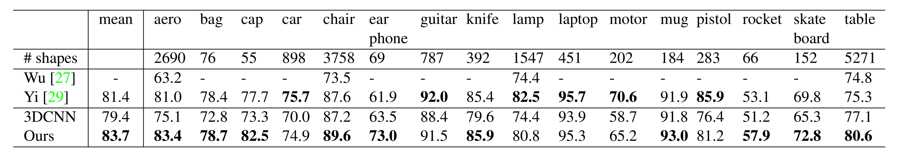
Table 2. Segmentation results on ShapeNet part dataset. Metric is mIoU (%) on points. We compare with two traditional methods [27] and [29] and a 3D fully convolutional network baseline proposed by us. Our PointNet method achieved the state-of-the-art in mIoU.
表2：ShapeNet 部件数据集的分割结果。指标是点上的 mIoU (%)。我们与两种传统方法 [27] 和 [29] 进行了比较，以及我们提出的一个 3D 完全卷积网络基线。我们的 PointNet 方法在 mIoU 上达到了最先进水平。
In this section, we compare our segmentation version, PointNet (a modified version of Figure 2, Segmentation Network), with two traditional methods [27] and [29] that both take advantage of point-wise geometry features and correspondences between shapes, as well as our own 3D CNN baseline. See supplementary for the detailed modifications and network architecture for the 3D CNN.
In Table 2, we report per-category and mean IoU (%) scores. We observe a 2.3% mean IoU improvement, and our network beats the baseline methods in most categories.
翻译：
在本节中，我们将我们的分割版本PointNet（图2中的修改版，分割网络）与两种传统方法 [27] 和 [29] 进行了比较，这些方法都利用了逐点几何特征以及形状之间的对应关系，同时我们还对比了我们自己的3D CNN基线。有关3D CNN的详细修改和网络架构，请参阅补充材料。
在表2中，我们报告了每个类别以及平均IoU（%）的分数。我们观察到平均IoU提升了2.3%，并且我们的网络在大多数类别上都超越了基线方法。
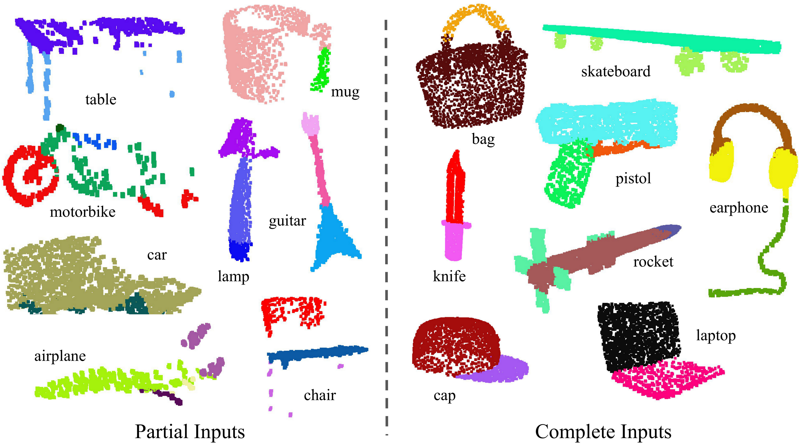
Figure 3. Qualitative results for part segmentation. We visualize the CAD part segmentation results across all 16 object categories. We show both results for partial simulated Kinect scans (left block) and complete ShapeNet CAD models (right block).
图3. 部件分割的定性结果。 我们展示了所有16个物体类别的CAD部件分割结果。左侧模块显示部分模拟Kinect扫描的结果，右侧模块显示完整的ShapeNet CAD模型的结果。
We also perform experiments on simulated Kinect scans to test the robustness of these methods. For every CAD model in the ShapeNet part data set, we use Blensor Kinect Simulator [7] to generate incomplete point clouds from six random viewpoints. We train our PointNet on the complete shapes and partial scans with the same network architecture and training setting. Results show that we lose only 5.3% mean IoU. In Fig. 3, we present qualitative results on both complete and partial data. One can see that though partial data is fairly challenging, our predictions are reasonable.
翻译：
我们还在模拟的 Kinect 扫描数据上进行了实验，以测试这些方法的鲁棒性。对于 ShapeNet part 数据集中的每个 CAD 模型，我们使用 Blensor Kinect Simulator [7] 从六个随机视角生成不完整的点云。在完整形状和部分扫描数据上，我们使用相同的网络架构和训练设置训练了 PointNet。结果显示，我们的平均 IoU 仅下降了 5.3%。在 图 3 中，我们展示了完整数据和部分数据的定性结果。可以看到，尽管处理部分数据非常具有挑战性，我们的预测仍然是合理的。
Semantic Segmentation in Scenes
Our network on part segmentation can be easily extended to semantic scene segmentation, where point labels become semantic object classes instead of object part labels.
We experiment on the Stanford 3D semantic parsing data set [1]. The dataset contains 3D scans from Matterport scanners in 6 areas including 271 rooms. Each point in the scan is annotated with one of the semantic labels from 13 categories (chair, table, floor, wall, etc., plus clutter).
翻译：
我们在部件分割上的网络可以轻松扩展到场景的语义分割，其中点的标签从对象部件的标签变为语义对象类别的标签。
我们在 Stanford 3D 语义解析数据集 [1] 上进行了实验。该数据集包含使用 Matterport 扫描仪扫描的 3D 数据，涵盖 6 个区域，包括 271 个房间。扫描中的每个点都被标注为 13 个类别之一（如椅子、桌子、地板、墙壁等，以及杂物）。
To prepare training data, we firstly split points by room, and then sample rooms into blocks with an area of 1m by 1m. We train our segmentation version of PointNet to predict per-point class in each block. Each point is represented by a 9-dim vector of XYZ, RGB, and normalized location relative to the room (from 0 to 1). At training time, we randomly sample 4096 points in each block on-the-fly. At test time, we test on all the points. We follow the same protocol as [1] to use a k-fold strategy for train and test.
翻译：
为了准备训练数据，我们首先按房间拆分点云，然后将房间划分为面积为
解释：
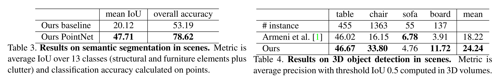
表 3. 场景中语义分割的结果。评价指标为 13 个类别（包括结构元素、家具元素以及杂物）的平均 IoU，以及基于点的分类准确率。
表 4. 场景中 3D 目标检测的结果。评价指标为 3D 空间中 IoU 阈值为 0.5 时计算的平均精度（average precision）。
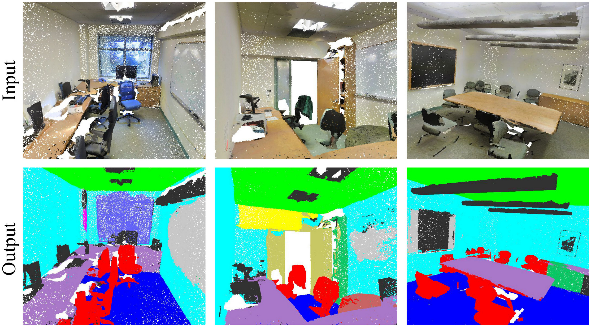
Figure 4. Qualitative results for semantic segmentation. The top row shows the input point cloud with color. The bottom row displays the output semantic segmentation result (on points) from the same camera viewpoint as the input.
图4. 语义分割的定性结果。 上排显示带颜色的输入点云。下排展示与输入相同摄像机视角下的输出语义分割结果（在点上）。
We compare our method with a baseline using handcrafted point features. The baseline extracts the same 9-dim local features and three additional ones: local point density, local curvature, and normal. We use a standard MLP as the classifier. Results are shown in Table 3, where our PointNet method significantly outperforms the baseline method. In Fig 4, we show qualitative segmentation results. Our network is able to output smooth predictions and is robust to missing points and occlusions.
翻译：
我们将我们的方法与基于手工设计点特征的基线方法进行了比较。基线方法提取了同样的 9 维局部特征，以及三个额外特征：局部点密度、局部曲率和法向量。我们使用标准的多层感知机（MLP）作为分类器。结果如 表 3 所示，我们的 PointNet 方法显著优于基线方法。在 图 4 中，我们展示了定性的分割结果。我们的网络能够输出平滑的预测结果，并且对点云缺失和遮挡具有很强的鲁棒性。
Based on the semantic segmentation output from our network, we further build a 3D object detection system using connected components for object proposals (see supplementary for details). We compare with the previous state-of-the-art method in Table 4. The previous method is based on a sliding shape method (with CRF post-processing) with SVMs trained on local geometric features and global room context features in voxel grids. Our method outperforms it by a large margin on the furniture categories reported.
翻译：
基于我们的网络输出的语义分割结果，我们进一步构建了一个使用连通组件生成对象候选区域的 3D 目标检测系统（详细信息参见补充材料）。我们在 表 4 中与之前的最先进方法进行了比较。之前的方法基于滑动形状方法（使用 CRF 后处理），并结合 SVM 对局部几何特征和体素网格中的全局房间上下文特征进行训练。在家具类别的检测上，我们的方法以较大优势超越了之前的方法。
In this section, we validate our design choices by control experiments. We also show the effects of our network's hyperparameters.
翻译：
在本节中，我们通过对照实验验证了我们的设计选择。同时，我们还展示了网络超参数的影响。
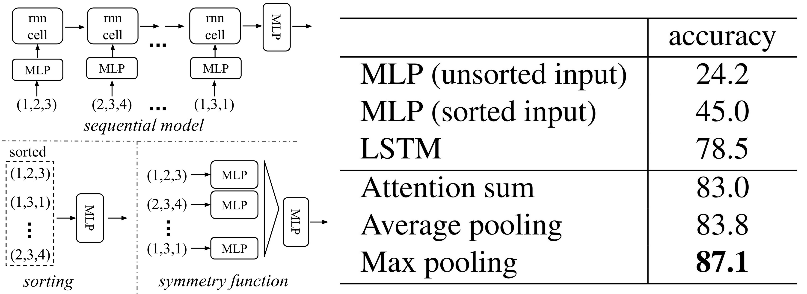
Figure 5. Three Approaches to Achieve Order Invariance. The multilayer perceptron (MLP) applied to points consists of five hidden layers with neuron sizes 64, 64, 64, 128, and 1024, where all points share a single copy of the MLP. The MLP close to the output consists of two layers with sizes 512 and 256.
图5. 实现顺序不变性的三种方法。 应用于点的多层感知器（MLP）由五个隐藏层组成，神经元大小为64、64、64、128和1024，所有点共享一个MLP的副本。靠近输出的MLP由两个层组成，大小为512和256。
Comparison with Alternative Order-invariant Methods
As mentioned in Sec 4.2, there are at least three options for consuming unordered set inputs. We use the ModelNet40 shape classification problem as a test bed for comparisons of those options. The following two control experiments will also use this task.
The baselines (illustrated in Figure 5) we compared with include multi-layer perceptrons on unsorted and sorted points as
arrays, an RNN model that considers input points as a sequence, and a model based on symmetry functions. The symmetry operations we experimented with include max pooling, average pooling, and an attention-based weighted sum. The attention method is similar to that in [25], where a scalar score is predicted from each point feature, then the score is normalized across points by computing a softmax. The weighted sum is then computed on the normalized scores and the point features. As shown in Figure 5, the max-pooling operation achieves the best performance by a large winning margin, which validates our choice.
翻译：
如第 4.2 节所述，对于处理无序集合输入，至少有三种可选方法。我们以 ModelNet40 形状分类问题为测试平台，对这些方法进行了比较。以下的两项对照实验也将基于这一任务。
我们比较的基线模型（如图 5 所示）包括：基于无排序和排序点作为
| Transform | Accuracy |
|---|---|
| none | 87.1 |
| input ( | 87.9 |
| feature ( | 86.9 |
| feature ( | 87.4 |
| both | 89.2 |
Table 5: Effects of input feature transforms. Metric is overall classification accuracy on the ModelNet40 test set.
表5：输入特征变换的效果。指标为ModelNet40测试集上的整体分类准确率。
Effectiveness of Input and Feature Transformations
In Table 5, we demonstrate the positive effects of our input and feature transformations (for alignment). It's interesting to see that the most basic architecture already achieves quite reasonable results. Using input transformation gives a
performance boost. The regularization loss is necessary for the higher dimension transform to work. By combining both transformations and the regularization term, we achieve the best performance.
翻译：
在表 5 中，我们展示了输入和特征变换（用于对齐）带来的正面效果。值得注意的是，即使是最基础的架构也已经取得了相当不错的效果。使用输入变换可提升
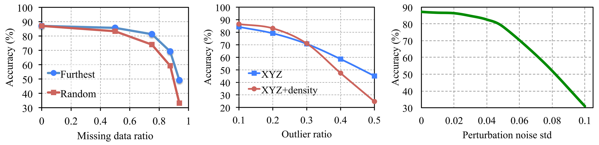
Figure 6. PointNet robustness test. The metric used is the overall classification accuracy on the ModelNet40 test set. Left: Point deletion. "Furthest" indicates that the original 1024 points are sampled using farthest point sampling. Middle: Point insertion. Outliers are uniformly scattered within the unit sphere. Right: Point perturbation. Gaussian noise is independently added to each point.
图6. PointNet鲁棒性测试。测试指标为ModelNet40测试集上的整体分类准确率。左图：删除点。“Furthest”表示使用最远点采样法从原始1024个点中进行采样。中图：插入点。离群点均匀分布在单位球内。右图：扰动点。对每个点独立添加高斯噪声。
Robustness Test
We show our PointNet, while simple and effective, is robust to various kinds of input corruptions. We use the same architecture as in Figure 5's max pooling network. Input points are normalized into a unit sphere. Results are in Figure 6.
As to missing points, when there are
points missing, the accuracy only drops by and with respect to furthest and random input sampling. Our network is also robust to outlier points, if it has seen those during training. We evaluate two models: one trained on points with coordinates; the other on plus point density. The network has more than accuracy even when of the points are outliers. Figure 6 (right) shows the network is robust to point perturbations.
翻译：
我们证明了 PointNet 模型既简单又高效，同时对多种输入扰动具有鲁棒性。我们使用图 5 中最大池化网络的相同架构。输入点被归一化到单位球体内，结果如图 6 所示。
关于点丢失问题，当
解释：
这里需要解释什么是 最远点采样（Furthest Sampling）和 随机采样（Random Sampling）。
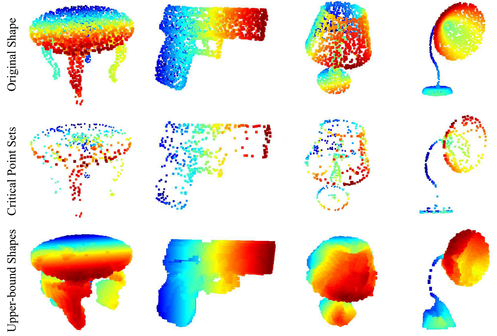
Figure 7. Critical points and the upper bound shape. While the critical points collectively determine the global shape feature for a given shape, any point cloud that lies between the set of critical points and the upper bound shape will yield exactly the same feature. Depth information is color-coded in all figures for better visualization.
图 7. 关键点与上界形状。虽然关键点共同决定了给定形状的整体特征，但任何位于关键点集合与上界形状之间的点云都会产生完全相同的特征。所有图中均使用颜色编码来显示深度信息。
In Fig. 7, we visualize critical point sets
and upper-bound shapes (as discussed in Theorem 2) for some sample shapes . The point sets between the two shapes will give exactly the same global shape feature . We can see clearly from Fig. 7 that the critical point sets
, those contributed to the max pooled feature, summarize the skeleton of the shape. The upper-bound shapes illustrate the largest possible point cloud that gives the same global shape feature as the input point cloud . and reflect the robustness of PointNet, meaning that losing some non-critical points does not change the global shape signature at all. The
is constructed by forwarding all the points in an edge-length-2 cube through the network and selecting points whose point function values are no larger than the global shape descriptor.
翻译：
在图 7 中，我们对一些示例形状
从图 7 中可以清楚地看到，关键点集
| Architecture | #params | FLOPs/sample |
|---|---|---|
| PointNet (vanilla) | 0.8M | 148M |
| PointNet | 3.5M | 440M |
| Subvolume | 16.6M | 3633M |
| MVCNN | 60.0M | 62057M |
Table 6. Time and space complexity of deep architectures for 3D data classification. PointNet (vanilla) is the classification PointNet without input and feature transformations. FLOP stands for floating-point operation. The "M" stands for million. Subvolume and MVCNN used pooling on input data from multiple rotations or views, without which they have much inferior performance.
表6. 深度架构在3D数据分类中的时间和空间复杂度。PointNet（原始）指的是不进行输入和特征变换的分类PointNet。FLOP代表浮点运算。 "M"代表百万。Subvolume和MVCNN在输入数据上使用来自多个旋转或视角的池化，否则它们的性能会大幅下降。
Table 6 summarizes space (number of parameters in the network) and time (floating-point operations/sample) complexity of our classification PointNet. We also compare PointNet to a representative set of volumetric and multi-view based architectures in previous works.
While MVCNN [23] and Subvolume (3D CNN) [18] achieve high performance, PointNet is orders more efficient in computational cost (measured in FLOPs/sample:
and more efficient, respectively). Besides, PointNet is much more space efficient than MVCNN in terms of the number of #param in the network ( fewer parameters). Moreover, PointNet is much more scalable—its space and time complexity is —linear in the number of input points. However, since convolution dominates computing time, the time complexity of the multi-view method grows squarely with image resolution, and the volumetric convolution-based method grows cubically with the volume size. Empirically, PointNet is able to process more than one million points per second for point cloud classification (around 1K objects/second) or semantic segmentation (around 2 rooms/second) with a 1080X GPU on TensorFlow, showing great potential for real-time applications.
翻译：
表 6 总结了我们分类 PointNet 的空间（网络中参数数量）和时间（每个样本的浮点运算次数，FLOPs）复杂度。我们还将 PointNet 与之前工作中基于体素和多视图的代表性架构进行了对比。
虽然 MVCNN [23] 和 Subvolume (3D CNN) [18] 在性能上表现出色，但 PointNet 在计算成本上高效得多（以每个样本的浮点运算次数衡量，分别高效
从实验来看，PointNet 在 TensorFlow 平台和 1080X GPU 上可以每秒处理超过 100 万个点云，用于点云分类时可以达到每秒约 1K 个对象，或用于语义分割时每秒约 2 个房间，展现了其在实时应用中的巨大潜力。
In this work, we propose a novel deep neural network PointNet that directly consumes point cloud. Our network provides a unified approach to a number of 3D recognition tasks including object classification, part segmentation and semantic segmentation, while obtaining on par or better results than state of the arts on standard benchmarks. We also provide theoretical analysis and visualizations towards understanding of our network.
翻译：
在本文中，我们提出了一种新颖的深度神经网络 PointNet，该网络可以直接处理点云数据。我们的网络为多个3D识别任务（包括物体分类、部件分割和语义分割）提供了统一的解决方案，并在标准基准测试中取得了与当前最先进方法相当或更优的结果。此外，我们还提供了对网络的理论分析和可视化，以帮助理解其工作原理。
对PointNet的介绍就到此为止了，附录部分不再介绍，感兴趣的读者可以自行阅读。在笔者读过的大量论文中，这篇论文读来最酣畅淋漓。虽然阅读难度很大，但得到的思想洗礼也最为深刻。
PointNet的作者在后续工作中提出了升级版——PointNet++，克服了PointNet的一些短板，并在多项任务上取得了显著提升。PointNet++通过引入分层结构、多尺度特征学习、特征传播机制等技术，增强了网络的局部特征提取能力和对非均匀点云的鲁棒性。我们将在下一篇文章中详细解读PointNet++，探索它如何在PointNet的基础上进一步进化，并针对复杂的3D场景提出更优的解决方案。不过，由于投入的精力过大，笔者难以保证更新的时间，望读者理解。
最后，感谢您阅读本文，希望这篇带读对您的学习与研究有所助益。如果您对PointNet++解读感兴趣，请持续关注笔者的账号。